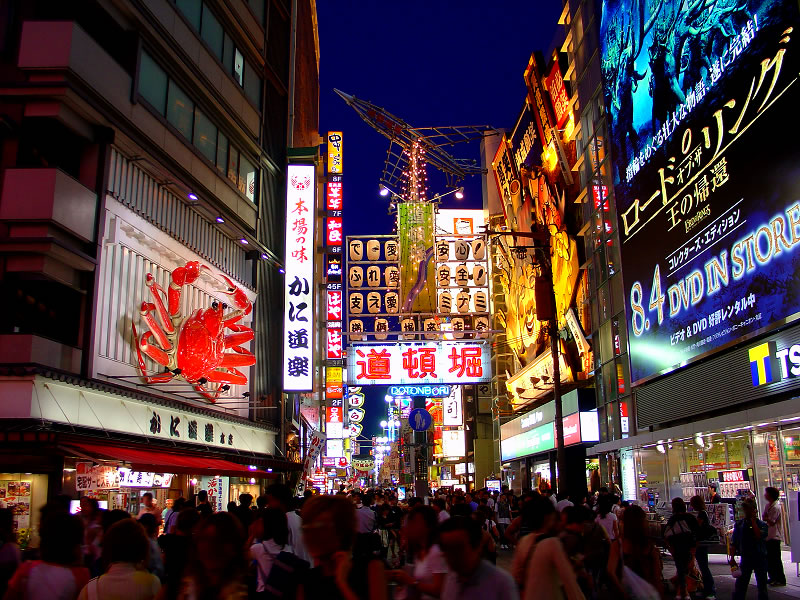

<!DOCTYPE html>

<html lang="en">
    <head>
        <meta charset="utf-8" />
        <title>道頓堀 (大阪)</title>
    </head>
    <body background="000.jpg"></body></body>
    <font color="red" size="20"<h1><em>道頓堀 (大阪)</em><h1></font>
    <h2>道頓堀，是在大阪地區，沿著道頓堀運河所發展出，主要為娛樂、飲食和購物的一個地區。最知名的景點就是固力果跑步人(Glico）的看板！</h2>
    <h3>在大阪這邊，觀光客的陷阱還真不少；所以在這裡就務必只做當地人以及觀光客會做的事，那就是只去道頓堀就好了。基本上我們是白天的時候去，只是逛街或只到特定的目的地。</3>
    
</html>
